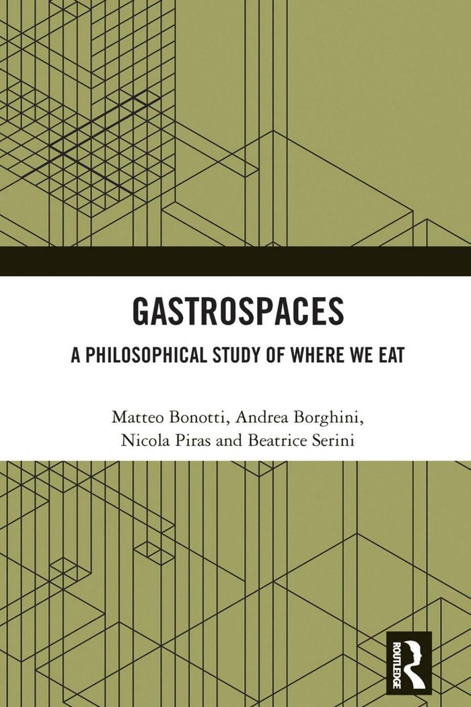

Justice
How gastrospaces distribute access to food, services, shared space, civic participation, and community life - and how they can reproduce exclusion, discrimination, and unequal power.
Philosophy · Space · Everyday life
A theory, a scalable framework, and a research programme for understanding food and space.
Every meal happens somewhere. That somewhere matters.
These places are more than settings. Public or private, formal or improvised, they shape how we eat - and how memory, identity, politics, culture, belonging, exclusion, and economic life take form.
01 / About
Gastrospaces is a philosophical concept and a scalable framework for studying the spaces where eating takes place.
It brings analytic ontology and political philosophy into conversation with food studies, geography, architecture, design, data and mapping, and the social sciences.
This website brings together research, methods, cases, and materials related to Gastrospaces.
The aim is to build a shared language for understanding food and space and to connect philosophical research with mapping, policy, design, and practice.
02 / Entry points
Six provisional ways into the social, material, political, cultural, economic, and atmospheric life of gastrospaces. They are entry points, not a closed taxonomy.
How gastrospaces distribute access to food, services, shared space, civic participation, and community life - and how they can reproduce exclusion, discrimination, and unequal power.
The relations created by eating together, from intimacy and conviviality to civic belonging.
The politics of shared tables, streets, markets, institutions, and informal gathering.
Domestic arrangements as sites of care, routine, labour, memory, and unequal power.
How gastrospaces act as gateways into cultures and as drivers of local and global economies, shaping taste, traditions, mobility, and community life.
The sensory and affective qualities through which a place becomes inviting, alienating, familiar, or meaningful.
03 / Systems & mapping
Gastrospaces rarely stand alone. They connect through people, practices, infrastructures, institutions, commodities, images, and data.
It can be applied to a table, a building, a neighbourhood, a city, a region, or a transnational network. Individual places can be studied on their own or as parts of larger gastrospace systems.
Each project can select and combine the data appropriate to its question - qualitative, spatial, social, economic, sensory, cultural, political, or environmental.
Actors, practices, flows, thresholds, ownership, institutions, and infrastructures.
Spatial, social, economic, sensory, cultural, political, and environmental evidence.
Research, policy, planning, design, management, and community initiatives.

04 / The book
The book develops a systematic philosophical framework for understanding the spaces where eating takes place. Combining analytic political philosophy and ontology, it examines gastrospaces as sites of social interaction, justice and injustice, cultural identity, and everyday life. Through examples ranging from domestic kitchens to restaurants, schools, markets, and public spaces, it offers both a conceptual framework and a practical toolbox for scholars, policymakers, designers, and practitioners.
View at Routledge05 / Research & resources
This section brings together core texts, related scholarship, and methods and cases that help develop and apply the gastrospaces approach.
The book and papers that develop the concept and its philosophical foundations.
Selected work on food, space, justice, culture, design, geography, and everyday life.
Mapping projects, datasets, ontologies, field studies, and policy or design tools.
From the Gastrospaces project
06 / Gallery
Maps, field observations, talks, workshops, public events, and images of gastrospaces.